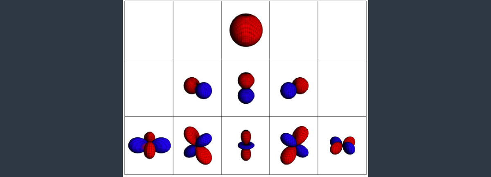

实时全特效GI（Global Illumination，全局光照）一直是图形学中可望而不可及的圣杯，前人为此作出了无数努力，尽管诸多想法距离圣杯都还有一定的距离，但依然产生了不少有趣的技术。本文讨论的基于球谐函数（Spherical Harmonics）的预计算辐射传输（Precomputed Radiance Transfer）算法就是其中的一项明珠。
从渲染方程开始
考虑渲染方程：
没啥好讨论的，是直接可以获得的场景数据，这里简单起见就假设它不存在好了；我们再把非直接光照也扔掉，于是原式就变成了：
我们进一步做一个假设：整个场景中只有一个环境光源。所谓环境光源，可以理解为一个包裹整个场景的、和物体距离非常之大（比如无限远）的球形光源。它的一个特征是从辐射亮度只和方向有关，和被照明点的位置无关，因为不管是多少，和光源的距离比起来也可以忽略。此时，渲染方程被简化为了：
其中表示从点朝方向发射的射线是否没有被任何东西挡住，是环境光源沿方向的辐射亮度。
投影与重建
这里不太严格地介绍一下本文用到的投影与重建的思想。给定一组基函数和被投影的函数，
可以用来衡量与的相似程度。将一系列的用加权求和，可以得到的一个近似表示：
至于近似水平如何，就要看性质好不好、表现力如何以及够不够大了。很多人大一学过的傅里叶级数就是非常好的示例。特别地，如果满足如下性质：
就称是一组单位正交基。单位正交基有一个超～棒的性质，令：
则：
PRT框架
看看上面的简化版渲染方程，再看看“单位正交基的美妙性质”所计算的积分，是不是觉得它们之间有一分相似？我们把、和三项打包，把单独打个包，分别看作和，就得到了：
现令：
于是的近似版就出现了：
这就是整个PRT的框架了——剩下的工作“只不过”是找到合适的，以及计算、和乘积的积分。PRT的思想就是尽可能地把更多的计算量挪到一劳永逸的预计算阶段，减小实时渲染阶段的负担。
球谐函数的定义
这里要介绍的球谐函数（Spherical Harmonics，SH）就是我们要使用的。说实话，SH的定义实在是太蛋疼了，我觉得自己没法说清楚它的来龙去脉，这里直接摆上来吧。首先引入伴随Legendre多项式作为辅助函数：
然后球谐函数长这样子：
其中，
是归一化系数。根据的不同，可以把SH分成很多层，层数越高所代表的分量的频率也就越高。比如对应1个SH，就只是个常量函数；对应3个SH，有了一些粗粒度的变化；对应5个SH，代表了具有更高频率的分量，等等：

一般我们用“L阶SH”来代指前L层的SH。
以为参数的球谐函数有时不那么好用，可以把它们换成坐标。Wiki上有一些三维欧氏空间上的低阶球谐函数的表达式，可以直接拿过来用。最后，和两个参数终归不太好使，我们可以利用公式将它们编码成一个线性下标，以后记作。
求解SH系数
蒙特卡洛暴力即可，设在球面立体角上进行采样所使用的概率密度函数是，总采样数是，估计量走起：
当然，的选取还是可以讲究一番的，总之是按重要性采样的原则来，这里不多赘述。
旋转SH系数
SH函数还有个美妙的性质，就是我们可以通过旋转其系数来实现对原函数的旋转。这有什么用呢？可以用来高效地旋转我们的环境光。设想要是没有这个性质，那么环境光一转，就得用蒙特卡洛方法重新算；而有了这个性质，我们直接把一个线性变换作用到原来的上即可，岂不美哉。
这个系数的旋转方法用起来简单，推导起来就没那么简单了。许多paper长篇累牍地讲述如何推导SH系数的旋转矩阵，以及如何减少这一过程需要的计算量。我在这里找到一个非常⑨的做法，下面讨论的算法即来源于此。
首先我们需要一些SH的性质，它们的证明不在本文的讨论范围之内：
- SH系数旋转可以通过一个线性变换完成。
- 每一阶的SH系数旋转可以分别完成。
现在以的SH系数旋转为例进行说明。假设投影函数将笛卡尔坐标表示的三维方向向量投影为2阶SH函数的5个系数，我们希望进行的旋转是个线性变换，用3阶方阵表示，是用来旋转SH系数的5阶方阵，则对任意方向向量，有：
现在随便选5个方向向量，于是：
记，若可逆，则可以被表示为：
于是我们得到了计算旋转矩阵的方法——只需要适当地选取以保证可逆即可。不过，在实际使用的时候我们往往并不关心本身是多少，而是希望计算出某个球谐系数向量对应的。这个就非常好说了：
至此问题已经解决了。给定旋转矩阵和SH系数，旋转后的SH系数可按如下步骤计算：
- 预先选好，计算出。这一步可以直接硬编码结果。
- 用旋转，得到。
- 用计算出对应的SH系数，以它们为列构造一个5x5矩阵。
- 计算并作为结果输出。
用这样的思路，可以推得任意阶SH系数的旋转方法。下面简单地罗列了一组前3阶的和：
l = 0
此时的SH是常量函数，旋转不会影响其系数值。
l = 1
结合Wiki上的SH函数公式，可以表示为：
现取，则：
l = 2
首先根据SH给出。设，则：
设，取：
通过数值计算可以求得为：
实现
我简单地实现了1~5阶SH的投影、系数旋转和重建过程，代码放在这里。随便画个模型看看：

环境光一开始在人像的右侧，上图中从左至右是将环境光绕垂直方向旋转了0度、90度、180度、270度后的结果，用了3阶SH，效果意外地很不错。
拓展
以下是一些更加高级的内容，我将它们实现在了代码中，但在这里不过多介绍。
在之前讨论PRT的时候，我们一开始就舍弃了间接光照，这多多少少会让物体表面看起来暗淡了一些，在材质的反照率较高时尤为明显。如果我们不把间接光照舍弃呢？
考虑将物体上某一点具有的亮度值视为该点对环境光的一种响应，那么对每个立体角微元而言，都应该是一个和无关、仅和有关的量。基于此，场景中只存在环境光源时的LTE可以被写作：
衡量了对来自方向的环境光的敏感程度。我们可以把和分别投影到SH上，从而得到包含了间接光照的结果。将投影到SH空间的过程和path tracing非常相似，我就直接放结果了：

上图中最右侧的图像是用path tracing渲染的参考结果，上面的一排分别是用1~5阶SH投影和重建直接光照得到的结果，下面的一排则是考虑了间接照明的结果，可以“右键→在新窗口中查看图片”来查看大图。在阶数达到4、5阶时，下面的图像和参考图像间的差别已经很难用肉眼分辨了。